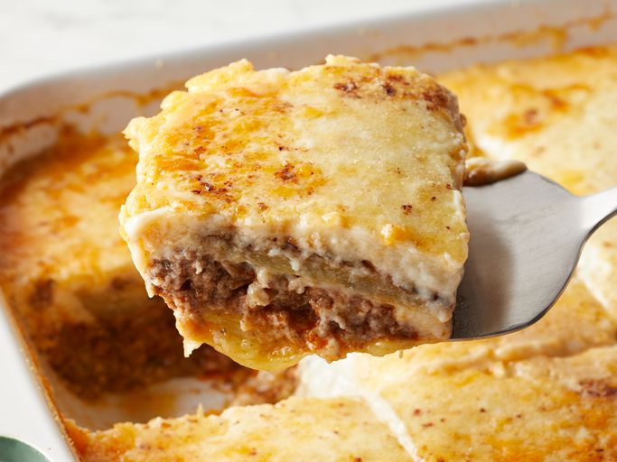

moussaka

Description
This moussaka tastes great! Layers of sliced eggplant are baked in
a ground beef sauce and smothered
in a creamy white béchamel sauce in this classic Greek dish.
ingridient
- salt to taste
- tablespoon butter
- water
step1
- Lay eggplant slices on paper towels; sprinkle lightly with salt. Let sit for
30 minutes to draw out moisture, then pat dry with paper towels.
step2
- Warm olive oil in a skillet over high heat. Fry eggplant until browned, 2 to 3 minutes per side.
Drain on paper towels; set aside.
- Melt 1 tablespoon butter in a large skillet over medium heat. Stir in ground beef, onions, and garlic;
season with salt and black pepper.